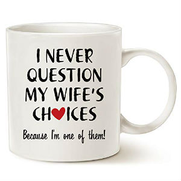

Choosing a gift is a kind of ritual. After all, through gift-giving, you express your attitude and feelings towards a person. The success of the gift depends on how surprising it is. It can be accompanied by a creative greeting in the form of a handwritten note.
But not everything is so simple. Constantly we have to puzzle over what to give someone. By following the rules below, you can give not only a gift but also positive emotions that will lift the mood of the recipient.
For example, if you’re going to your friend’s birthday party, then count on one price, but if you’re gift-shopping for a colleague at work, that will likely be a different price. People you are close to can be given needed things, like an electric toothbrush, a towel, a nice bathrobe, perfume, and bed linen.
For your boss, it would be better to give a souvenir related to their professional activities or hobbies, for example a nice planner or a leather notebook. If their hobby is tennis, you can give a tennis racket or a racket case. Those who love hunting and fishing would surely appreciate a gift card to a specialized outdoor shop.
There are two ways to find out what a person wants to be given. The first is to simply ask the person, but then the gift won’t be a surprise. The other option, which is the best way, is to ask friends and family about the person’s preferences. For example, when you are invited to a child’s birthday party, you can ask the parents in advance what kind of games and activities the child is interested in or what they like to collect.
After all, the main thing about gift-giving is the attention you show to the recipient. If you give an overly expensive gift, the person may feel obliged to give you something of a similar price in return, but this is not always possible and may create an uncomfortable situation.
Gifts can be inexpensive yet still original and interesting. For example, you could give a cake with a creative design or an object with something printed on it. Even just writing kind words on a beautifully-wrapped chocolate bar would surely lift the mood of the recipient.